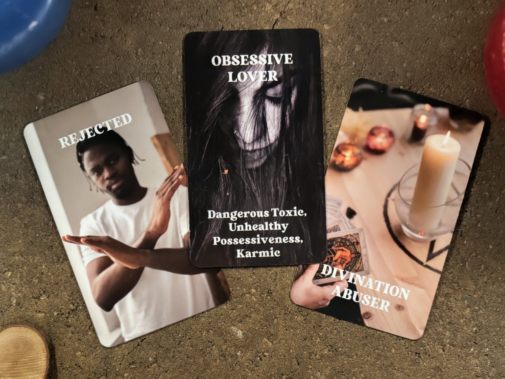
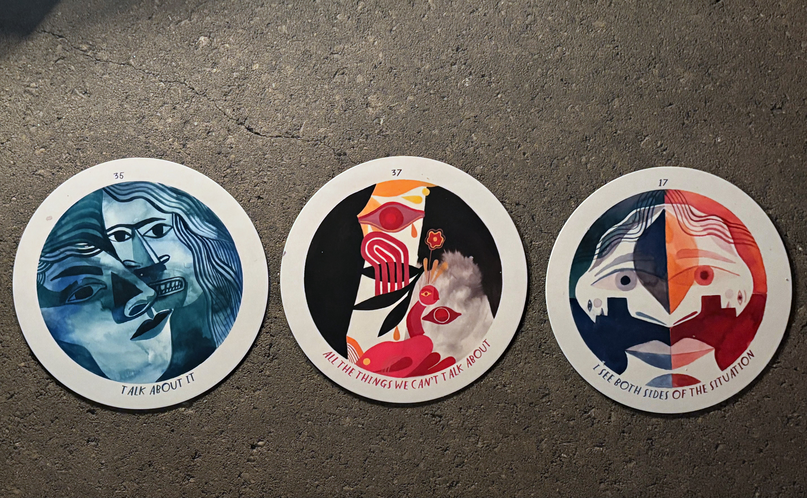
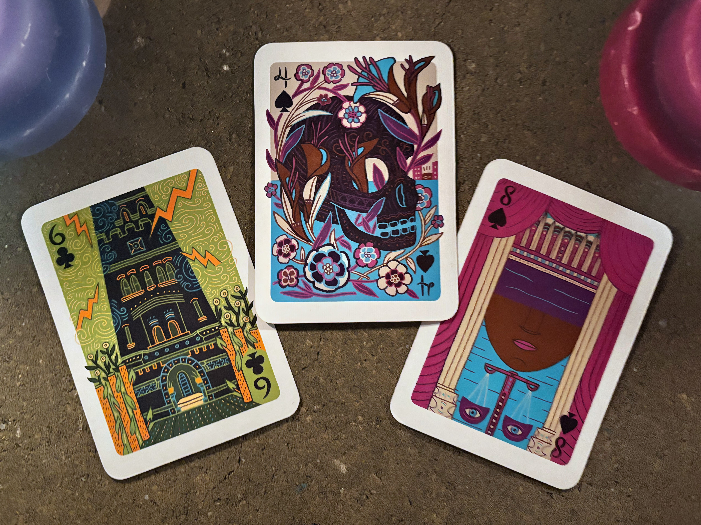
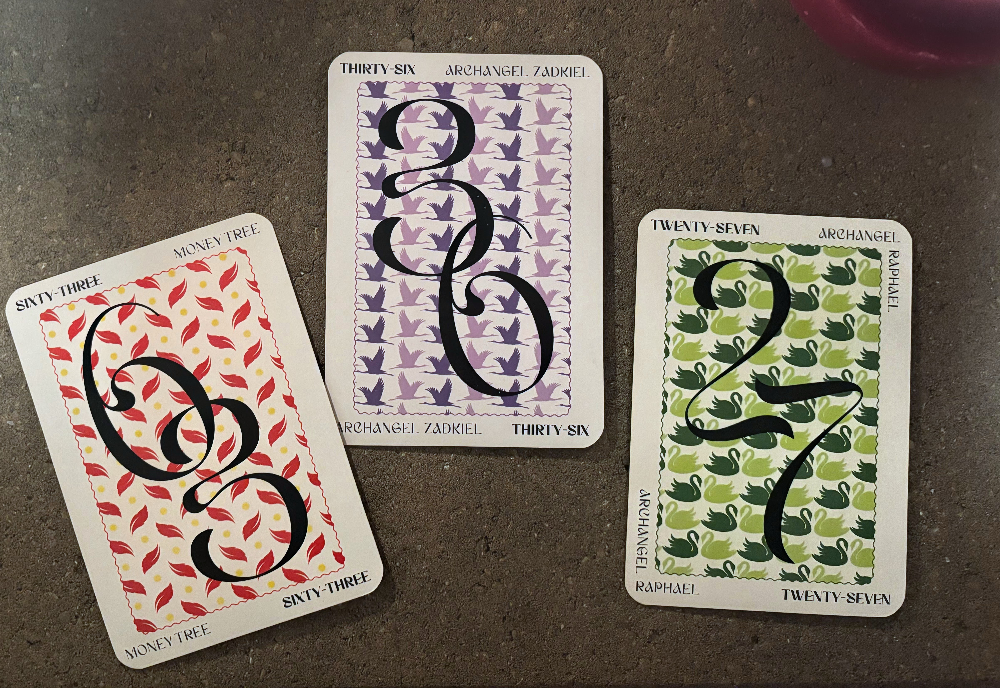

Begin with the full audio, then scroll down to explore a breakdown.
With so many Major Arcana cards showing up, the reading highlights a turning point in your situationship. The energy here is substantial, signaling a phase of deep importance and transformation.
Grief & Aftermath
Focused on Person B
Commitment & Resolve
Willing & Aligned
Hidden Potential
Guiding Card Message
Deeper Insight
Current Emotions: Your energy shows a cycle that has finally run its course. You're beginning to move past what once held you in place, redirecting your mental and emotional focus toward healing and renewal.
Your Thoughts: Your focus is turning toward what you can build rather than what you've lost. You have the inner resources to manifest real change, and your energy is aligning with the steps needed to move forward.

Revealed Energetic Influence
Their Feelings: Person B is oriented toward building this relationship. They've thought through their approach, and they feel assured in the plan they've created. Their confidence in moving things forward is solid.
Their Thoughts: Person B is aware that the situation has become uneven. They don't want to keep juggling or maintaining an imbalance, and they're thinking seriously about how to correct it and bring things back into order.

The Connection
The dynamic here reflects someone who spent a lot of time overthinking before making their move. An apology or acknowledgment may have been necessary, and they approached the situation slowly rather than impulsively. The foundation rests on thoughtful consideration and a desire to move forward the right way.

Groundwork
This guidance tells you that clarity is coming. Things that have been in shadow will be illuminated. You will gain more understanding as time moves forward. The universe is saying that more light will be shed on this situation with time.

Your Card
The outcome indicates someone finally seeing the value of this connection that they hadn't fully acknowledged. That recognition creates space for mutual understanding, and the next steps involve both of you putting in the effort to strengthen and refine the relationship.
The cards emphasize one crucial piece of guidance: Stop letting this drag out; make the call. This could be:
The cards show Person B gearing up to approach you directly. It could happen through mutual friends or in a setting that feels familiar. Bottom line: they're coming forward. The key is: they've made up their mind about you.
The cards show there's something about the two of you having your own little ritual, your version of 'tea time,' where you settle in and actually meet each other.
These numbers likely resonate with you or your situation:
Number 27 is about seeing the truth you've been avoiding.
The oracle cards indicate something about coming forward. It looks like someone is finally ready to stop sitting on their thoughts and actually take action.
[your name], the cards show that both you and Person B want the same outcome.
While you may feel confused now, remember that this is temporary.
Surrender.
Want deeper insight into your relationship or future?
Book Another Reading